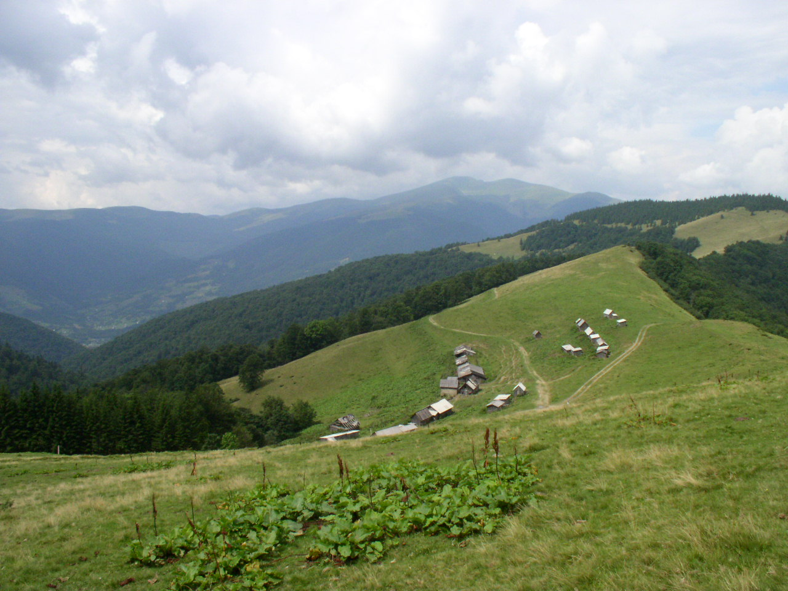

Місце народження: 5 вересня, 2002 року, м. Київ
Освіта: НТУУ "КПІ", м. Київ
Хоббі:
Улюблені фільми:
Карпа́ти (пол. Karpaty, нім. Karpaten, словац. Karpaty, угор. Kárpátok, рум. Carpaţi, серб. Карпати) — гірська система на сході Центральної Європи, на території:України, Угорщини, Чехії, Польщі, Словаччини, Румунії, Сербії, та Австрії. Простягається від околиць Братислави до Залізних Воріт на 1500 км, утворюючи опуклудугу, що замикає Середньодунайську рівнину.
